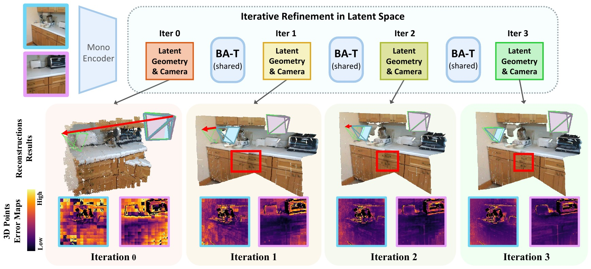
Abstract
Feed-forward models for 3D reconstruction have achieved strong performance using deep cross-view attention to exchange information across images. However, these approaches often depend on heavy decoder stacks and lack a structured mechanism for geometry refinement, resulting in poor multi-view consistency. We address this by drawing inspiration from classical bundle adjustment (BA), which can be viewed as an iterative information propagation process between poses and local geometry. Inspired by BA, we propose BA-T, an iterative Transformer that implements BA-style structured updates as a repeatable layer in implicit token space. Instead of relying on deep attention stacks, BA-T refines predictions based on latent residual by a single lightweight layer. Experiments demonstrate that BA-T progressively improves pose and reconstruction accuracy across iterations, achieves stronger cross-view consistency than conventional decoders, and matches or surpasses substantially larger models while using only 16% of their decoder parameters. BA-T provides a compact, efficient, and structural alternative to depth-heavy attention, enabling accurate 3D reconstruction within a lightweight architecture.
Method
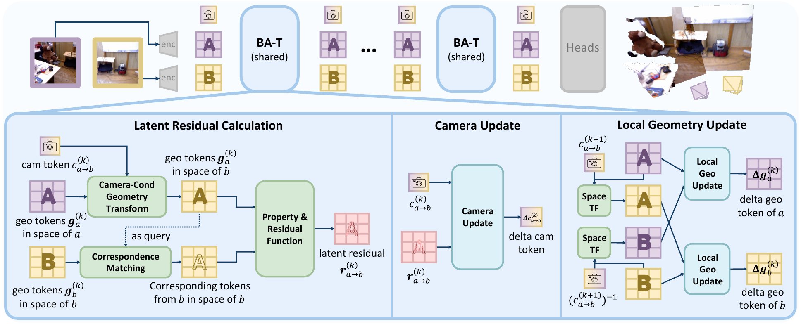
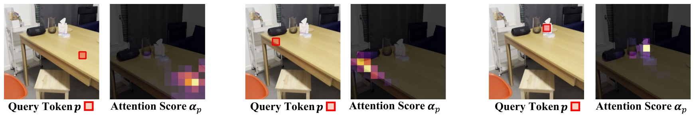
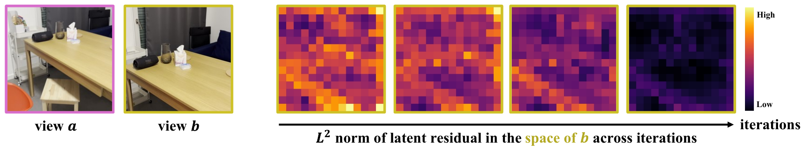
Every iteration is supervised, with later iterations weighted more heavily (\(\mathcal{L}_{\text{total}} = \sum_{k} \alpha_\lambda^{K-k}\mathcal{L}^{(k)}\)), so the network learns to refine progressively rather than only fitting its final output.
Results
Iterative refinement, two views
Local geometry and the relative camera are refined across iterations.
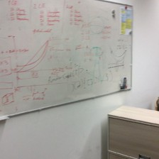
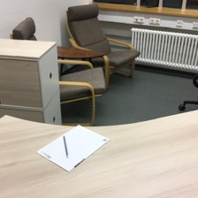
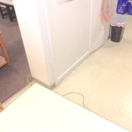
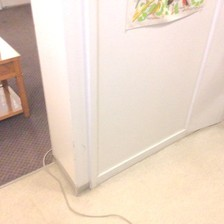
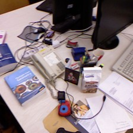
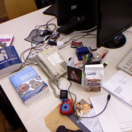
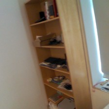
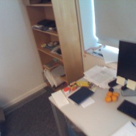
Extension to multi-view
All cross-view interactions in BA-T happen in each view's local space, so it extends to more views without architectural changes: each query view attends to all others, and all views are refined together.
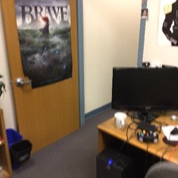
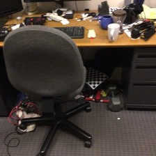
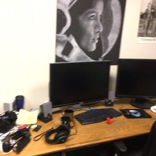
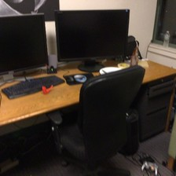
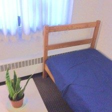
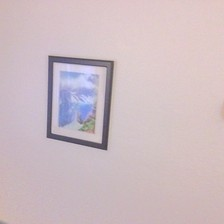
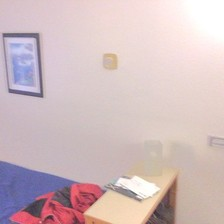
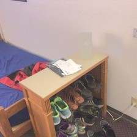
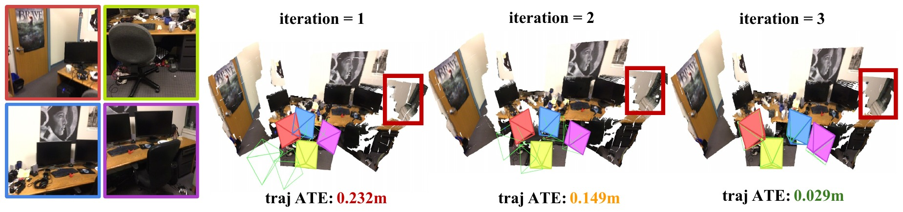
Qualitative results
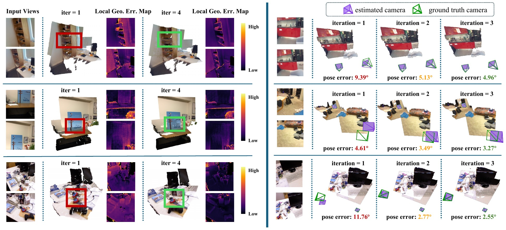
BibTeX
@inproceedings{zhang2026bat,
title = {{BA-T}: An Iterative Transformer for Two-View Bundle Adjustment},
author = {Zhang, Ganlin and Chen, Weirong and Cremers, Daniel and Wang, Xi},
booktitle = {Advances in Neural Information Processing Systems (NeurIPS)},
year = {2026}
}